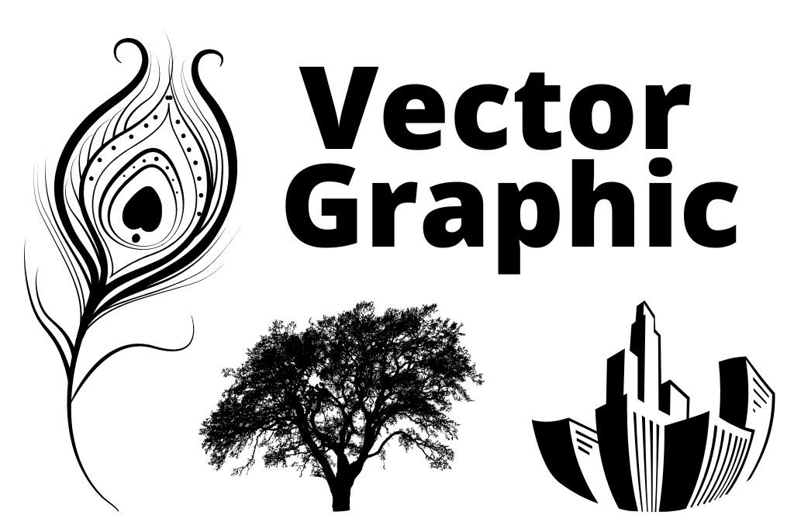
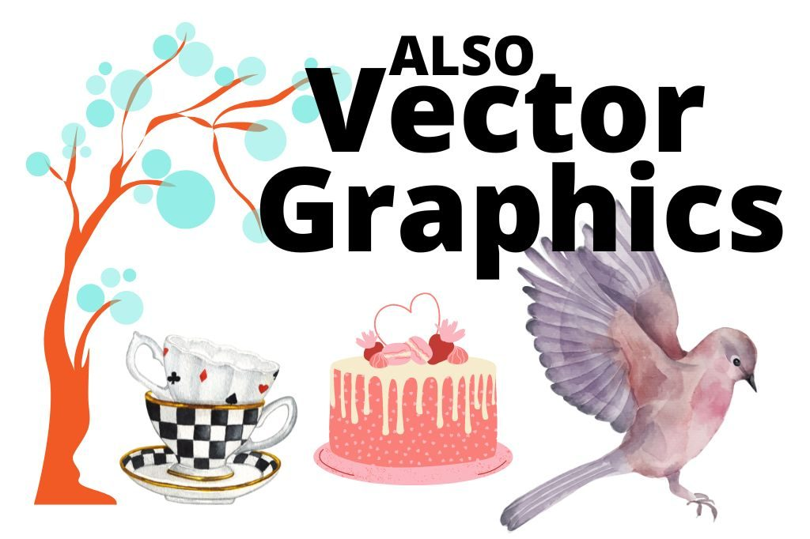

What is a Vector Graphic? Do I need one?
If you've done any marketing or graphic design, you've no doubt come across the term "vector graphic," but what exactly is it?
Why do you need one? Where do you get one? What is it?
Techie answer: A vector graphic is a type of image that is composed of mathematical points, making it resolution-independent and very scalable.
Non-techie answer: A vector graphic is a type of digital image created using mathematical points to create an object (like the ones in this image).
This makes them perfect for use in print and digital media, where high quality and clarity are essential.
Many people consider vector graphics just for high-end marketing gurus or gamers. That's not true. They are easy-to-create images that allow you to scale, edit, and customize your image. Let's take a closer look at vector graphics and explore some of the best ways to use them in your marketing.
Vector Graphics Offer Clarity and Customization

A vector graphic is a computer-generated image made up of points, lines, and curves called "vectors."
Vectors and pixels are not the same. Other file types may cause pixelation when you try to scale the image.
Vectors are created by applying mathematical equations to points in a two-dimensional (2D) or three-dimensional (3D) space. Images made up of vectors can be scaled (sized) up or down without losing quality, making them a popular choice for logos and other graphics that need to be resized often. In contrast, raster images, such as JPEGs and PNGs, consist of millions of tiny squares called pixels, which can become blurry when enlarged.
Vector graphics can also be easily edited and customized, making them a versatile tool for marketing materials. If you're looking for clean, high-quality visuals for your next campaign, consider using vector graphics!
Did you catch that? Vector graphics can be resized up or down WITHOUT losing quality!
Have you ever worked for hours on an image, only to find when you needed to use it for something else that you couldn't size it?
Or you used an image you thought would be OK, but your printer said it didn't display correctly?
Brand Kits Prefer Vector Graphics
A brand kit takes the guesswork out of branding, and vector versions of your logo and graphics are what keep it looking sharp everywhere, from a social post to a banner.
Want help with this?
Learn at your own pace with a short class, or get one-on-one help with your own project.
Need help creating your logo? DesignsThatDo.com is your answer!